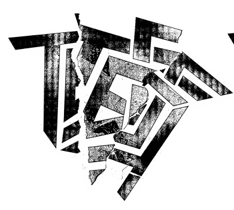
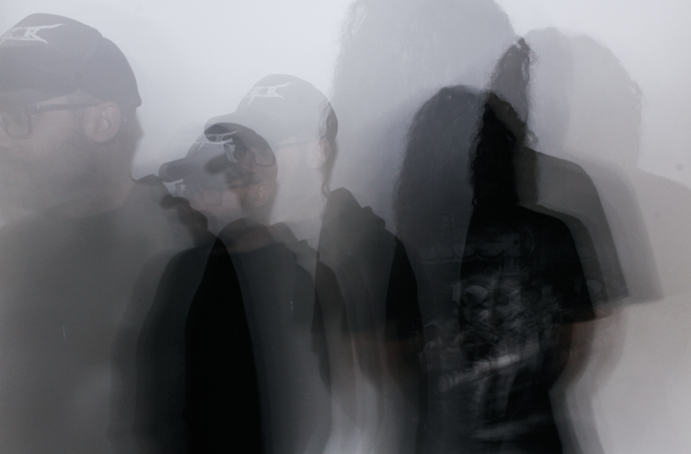

Banda TEST - Biografia
Formado em 2010 e com apenas dois integrantes - João Kombi (Vocalista, guitarrista e motorista) e Barata (Baterista - Eleito por Iggor Cavalera um dos 10 melhores bateristas de todos os tempos) - a banda TEST se apresenta a céu aberto e ocupa o espaço público desde o seu início.
A banda ficou conhecida ao tornar uma prática a realização de shows na rua, independentes. Em praças, parques, centros culturais e do lado de fora de grandes eventos de heavy metal, a ideia foi levar o seu som para quem quisesse escutar, indo na contramão do estilo, que naturalmente conta com um público mais elitizado.
Em 2012, a ideia de tocar na rua se tornou um festival, com oito bandas de metal extremo tocando no centro de São Paulo durante a Virada Cultural, por iniciativa própria (sem convite do evento oficial). O número de bandas saltou para 16 em 2014, quando a Prefeitura oficializou o Palco Test na Virada.
Além do sistema "delivery de shows", a banda já dividiu palcos em lugares fechados com grandes nomes como King Diamond, Napalm Death, Carcass, Exodus, Irmãos Cavalera, Brujeria, entre outros, e participou duas vezes de dois dos maiores festivais de música extrema do mundo - Obscene Extreme na Rep. Tcheca e Maryland DeathFest nos Estados Unidos).
Com um ritmo compulsivo de gravações e shows, o TEST chega a 10 anos de vida em 2020 com quase 700 apresentações em todas as regiões do Brasil, além de Canadá, Estados Unidos, México, Argentina, Uruguai, Paraguai, Colômbia e Europa, totalizando mais de 12 turnês fora do Brasil. Tudo organizado e produzido por seus próprios integrantes.
